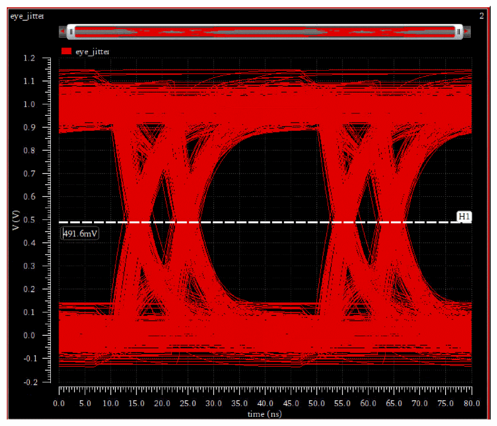
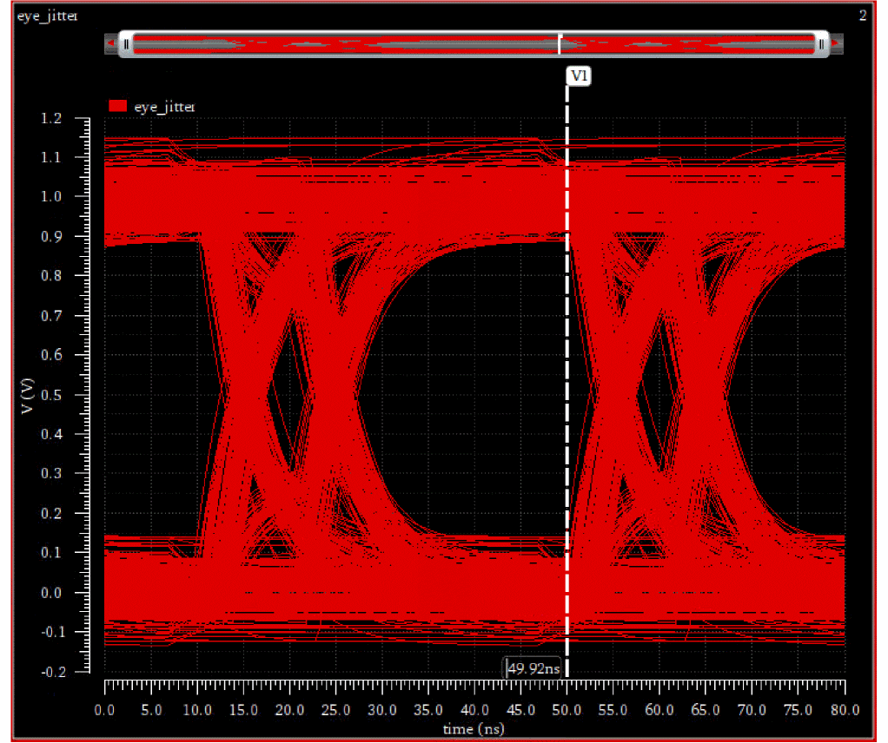
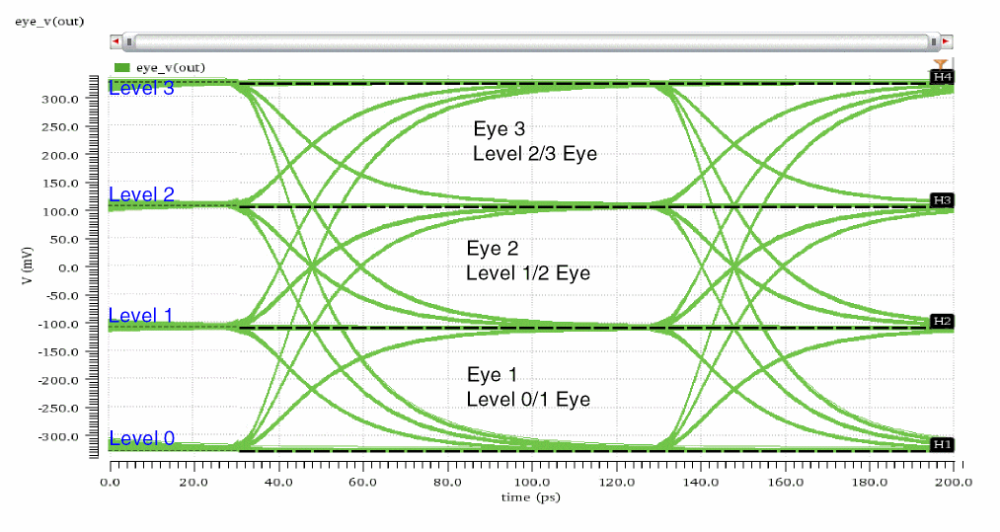
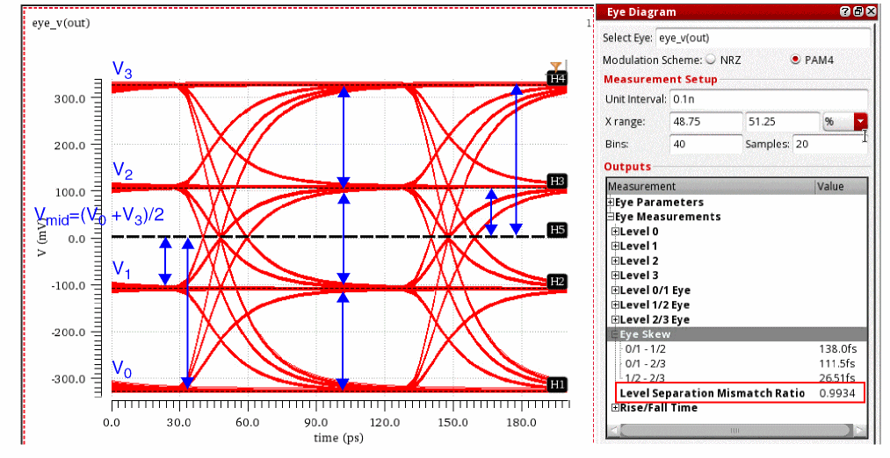
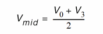
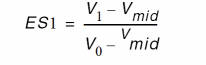
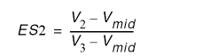
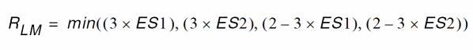

C
More About Eye Diagrams
An eye diagram represents the signal split into sections and then overlaid on top of each other. This gives a good indication of the quality of the signals in high speed digital transmissions. The figure below shows an ideal eye diagram.
However, signals are affected by noise, process, voltage, temperature, so the signals do not lie on top of each other when they are overlaid.
Eye diagrams are formed by overlaying segments of the input signal over an eye period. A new segment is started for every trigger event. For a regular eye diagram, the trigger period is equal to the eye period.
NRZ Eye Measurements
Consider creating an eye diagram using the following signal from time 1 us to 1.4 us. The signal has a unit interval (UI) of 40 ns.
To create a closed eye diagram, the eye period is set to 2 UI or 80 ns. The signal is periodically divided into segments of length 80ns and then overlaid to create the eye diagram.
When internal triggering is used, the trigger period determines how often a new segment is created. When a trigger period of 1 unit interval and an eye period of 2 unit intervals, a more detailed eye diagram can be obtained such that each cross appears in both transition areas. The following eye diagram is created with a trigger period of 40 ns and an eye period of 80 ns.
The metrics that can be calculated are based on performing statistical analysis of the eye diagram. The signal being analyzed can be thought of as a sequence of 1's and 0's, with transitions between the two logic levels. As a result, it is of interest to analyze the distribution of the timing of the transitions between 0 and 1 levels, and also to analyze the distribution of the signal levels of the parts of the eye diagram representing 0 and 1 values. There are various fields on the form that need to be completed to perform the analysis. In addition to the descriptions in the table below, the explanation of the measurements performed will clarify the meaning of the fields.
Assumptions
The following assumption have been made while calculating the advanced option values:
- The eye diagram period should be two unit intervals.
- The trigger period is one unit interval or signal triggered.
Measurements to be Computed
There are two groups of measurements that the Advanced Analysis computes — based on horizontal histograms and based on vertical histograms. In the computations below, 3sigma is used for the extent of the data, as this represents 99.7% of the values in a normal distribution.
Level 0 Mean is the mean of the y-values within the Level 0 Region.
Level 0 Stddev is the standard deviation of the y-values within the Level 0 Region.
Level 1 Mean is the mean of the y-values within the Level 1 Region.
Level 1 Stddev is the standard deviation of the y-values within the Level 1 Region.
These values are shown on a real eye diagram with many signals transitioning. The risetime, falltime, and jitter of each signal impacts the plot, which can be obtained from interference, PVT, and some jitter is just random. Notice that the transition areas are highlighted in the figure below. The level 0 (in red) and level 1 (in yellow) annotation shows the voltage high and lows areas. The histograms that represent the signals in level 1 and level 0 areas have been superimposed.
The following measurements have been calculated. Each measurement will be explained in the steps below:
Eye Amplitude
Eye Amplitude is the mean to the mean amplitude of the eye, is calculated as follows:
Eye Amplitude = Level1 Mean - Level 0 Mean
Signal to Noise Ratio
The signal to noise of the eye, is calculated as follows:
S/N = (Level1 Mean - Level 0 Mean) / (Level 1 stddev + Level 0 stddev)
= (993.9m -14.96m) / (53.08m+53.63m)
Eye Height
Eye Height is also known as the vertical eye width. Consider the vertical histograms. There are two transition areas on the eye diagram, as shown on the figure above. Then, if you take the vertical histograms and see them flipped over the eye.
Eye Height is calculated with the following formula:
eyeHeight = (MeanLevel1-3*stddevLevel1) - (MeanLevel0+3*stddevLevel0)
= (993.9m-3*53.08m) - (14.96m-3*53.63m)
The level 0 and level 1 regions are those specified by the X and Y ranges in the Eye Diagram assistant. All the Y-points in the waveform within these regions are used to perform the statistical analysis, unless they have been sampled first according to the Sampling Interval field. In the plotted vertical histograms in the above diagram, X-axis represents the amplitude variation.
Eye Width
The eye width is calculated using the peaks of the horizontal histograms. The average and standard deviations of these peaks are used to calculate the eye width.
eyeWidth = (peak2avg - (3*peak2stddev)) - (peak1avg + (3*peak1stddev))
When no deterministic jitter is present, the distribution of the crossings forms a single normal distribution. The probability of a point being within 3*stddev of the mean is 99.7%. The eye width is calculated using the points shown in the markers below.
When deterministic jitter is detected, the crossings on each side are split between the two bell curves instead of a single one. In this case, the mean and standard deviations of the bell curves closest to the center from each side is used to calculate the eye width. The mean and standard deviation are calculated from the points, shown by markers within the rectangles in the figure below.
Eye Rise Time
Two thresholds are created at the 20% and 80% points between the level 0 mean and level 1 mean. At each of these two thresholds, a horizontal histogram is computed (an analysis of the times of the crossing points of these two thresholds), and the resulting rise time is the difference in the mean crossing time at each of these two thresholds.
The calculations for the threshold crossing assume that only a single transition is used; therefore, one additional metric, eye risetime, is computed. In the eye risetime, two thresholds are created at 20% and 80% points between level 0 mean and level 1 mean. At each of these two thresholds, a horizontal histogram is computed (that indicates an analysis of the times of the crossing points of these two thresholds), and the resulting risetime is the difference in the mean crossing time at each of these two thresholds.
Right-click the Level0Mean Measurement and choose Send to ADE. This example uses the CIW to calculate the rise and fall times.
waveform=eyeDiagram(v("jitter" ?result "tran-tran") 0.5u 40.00u 80n ?autoCenter t) Level0Mean=eyeMeasurement(eyeDiagram(v("jitter" ?result "tran-tran") 5e-07 4e-05 8e-08 ?autoCenter t) 5e-07 4e-05 8e-08 0.5 nil t 40.0 0.0 t 60.0 50.0 t 40.0 50.0 t 60.0 100.0 100.0 "level0Mean")
EyeAmp=eyeMeasurement(eyeDiagram(v("jitter" ?result "tran-tran") 5e-07 4e-05 8e-08 ?autoCenter t) 5e-07 4e-05 8e-08 0.5 nil t 40.0 0.0 t 60.0 50.0 t 40.0 50.0 t 60.0 100.0 100.0 "amplitude")
start=0.5u
end=40u
period=80n
riseFallTimePercentLow=20
riseFallTimePercentHigh = 80
RisingLow=awvEyeCross(waveform start end period Level0Mean + EyeAmp*riseFallTimePercentLow/100) "rising")
RisingHigh=awvEyeCross(waveform start end period Level0Mean + (EyeAmp*riseFallTimePercentHigh/100) "rising")
riseTime=average(RisingHigh) - average(RisingLow)
=6.8997ns
=6.9ns
Eye Fall Time
FallingLow=awvEyeCross(waveform start end period Level0Mean + (EyeAmp*riseFallTimePercentLow/100) "falling") FallingHigh=awvEyeCross(waveform start end period Level0Mean + (EyeAmp*riseFallTimePercentHigh/100) "falling")
fallTime=average(FallingLow)-average(FallingHigh)
=6.816254ns
=6.816ns
Example
Consider the following example to understand the random and deterministic jitter.
Specify the following values in the Eye Diagram assistant:
Now, plot the eye diagram. The following plots appear.
Level 1 and Level 0 histogram areas can be annotated:
Plot the histograms and measurements:
The random jitter and deterministic jitter values are shown in the Measurement section, as shown in the figure below:
Threshold crossing Average and stddev
Measures the jitter of the signal. It is accurately computed only when there is a single transition region in the eye diagram because it is analyzed over the entire period, and therefore, it gives the overall standard deviation of both transition regions (as shown in the figure below).
Similar to the threshold crossing stddev, it is computed over the entire period.
The Threshold crossing Average and stddev values are measured by using the histogram2D function on the horizontal histograms. The Mean and Std Dev values annotated on the plot are the same as those in the Measurements.
Deterministic and Random Jitter
The following histograms are created for each side and density estimation is applied to fit each histogram to a distribution J(x), as shown in the figure below:
If deterministic jitter is present, each side's distribution is expected to have two peaks, and the deterministic jitter is the time difference of the peaks.
Random jitter is the standard deviation of the tails of the distribution.
Deterministic and random jitter are calculated using the histograms of the crossing points. For random jitter (left), the crossing times on the left half of the eye diagram (assuming 2 UI and centered) are sampled into a histogram (the red one). Kernel density estimation is then used to approximate a smooth distribution for the histogram. The histograms are similar to the horizontal histogram but isolated so in order to do the curve fitting. The deterministic jitter is the distance between the peaks (B markers on top and bottom picture). The random jitter is the standard deviation of the distribution. It is calculated as:
where u is the mean (B marker), x is the x-values from the A marker to B marker (tail of the distribution) and p is the corresponding height. This is repeated for the other tail (A to B in the figure below). The average stddev of the two tails is the output value of Random Jitter (left). The same is repeated for the green histogram to calculate Random Jitter (right). The output Deterministic Jitter is the average of the deterministic jitter of red and green.
BER curves are calculated as follows:
Left BER plot—Integrate left distribution from x to infinity.

The mean and standard deviation of the right-side tail of the left distribution is used to estimate beyond the range of the histogram.
Right BER plot—Integrate right distribution -infinity to x.
The mean and standard deviation of the left-side tail of the right distribution is used to estimate beyond the range of the histogram.
Additional Measurements
-
Max Eye Height and Max Eye Height Time
Max Eye Height calculates the largest vertical opening between 25% to 75% of the eye period above and below the threshold. The Eye Height Time is the time where the maximum eye height occurs. For example, the Maximum Eye Width is given as25.09nsat a threshold of491.6mVin the eye diagram below.
 -
Max Eye Width and Max Eye Width Threshold
Max Eye Width finds the largest horizontal opening between the points of the maximum eye height. Max Eye Width Threshold is the Y-value where the maximum eye width occurs. For example, the Maximum Eye Height at747.8mVis shown as49.92nsin the eye diagram below.

The following measurements are displayed in the Outputs section:
Displaying the Original Time in Marker Labels
The time value for the original waveform before it gets folded into an eye diagram is also displayed in the marker label on the eye diagram. For example, consider the waveform for the v/net1 signal shown in the figure below. The label displays the time value on the x-axis as 9.233ns when the voltage on Y-axis is set to 119.788mV.
Now, if you create the eye diagram for this signal, the label at the same voltage (119.788mv) displays 263.0895ps[9.232976ns]119.788mv, where 9.2329ns is the original time before the eye diagram is generated.
PAM4 Eye Measurements
The Pulse-Amplitude Modulation 4-Level (PAM4) is a modulation scheme that uses four voltage levels to represent four combinations of two-bit logic: 00, 01, 10, 11.
For each voltage level, you can measure the mean and standard deviations.
These four voltage levels result into three eyes and 12 transitions:
- Eye 1 (Level 0/1 Eye): Eye formed between level 0 and level 1
- Eye 2 (Level 1/2 Eye): Eye formed between level 1 and level 2
-
Eye 3 (Level 2/3 Eye): Eye formed between level 2 and level 3
For each voltage level, you can calculate the mean and standard deviation:
- Level 0 Mean: Mean of the voltage values within level 0
- Level 0 Std Dev: Standard deviation of voltage values within level 0
- Level 1 Mean: Mean of the voltage values within level 1
- Level 1 Std Dev: Standard deviation of voltage values within level 1
- Level 2 Mean: Mean of the voltage values within level 2
- Level 2 Std Dev: Standard deviation of voltage values within level 2
- Level 3 Mean: Mean of the voltage values within level 3
- Level 3 Std Dev: Standard deviation of voltage values within level 3
For each eye, you can calculate the following eye measurements:
- Threshold: Average of the two voltage levels:
- Max Width Threshold: Voltage level at which the eye width is maximum
- Max Width: Maximum width of the eye
- Max Height Time: Time (X-axis value) at which eye attains the maximum height
- Max Height: Maximum height of the eye
For each transition, you can calculate the rise/fall time:
- 0-1 Transition: Time taken to rise from 20% to 80% of the difference between level 0 and level 1
- 0-2 Transition: Time taken to rise from 20% to 80% of the difference between level 0 and level 2
- 0-3 Transition: Time taken to rise from 20% to 80% of the difference between level 0 and level 3
- 1-0 Transition: Time taken to fall from 80% to 20% of the difference between level 1 and level 0
- 1-2 Transition: Time taken to rise from 20% to 80% of the difference between level 1 and level 2
- 1-3 Transition: Time taken to rise from 20% to 80% of the difference between level 1 and level 3
- 2-0 Transition: Time taken to fall from 80% to 20% of the difference between level 2 and level 0
- 2-1 Transition: Time taken to fall from 80% to 20% of the difference between level 2 and level 1
- 2-3 Transition: Time taken to rise from 20% to 80% of the difference between level 2 and level 3
- 3-0 Transition: Time taken to fall from 80% to 20% of the difference between level 3 and level 0
- 3-1 Transition: Time taken to fall from 80% to 20% of the difference between level 3 and level 1
- 3-2 Transition: Time taken to fall from 80% to 20% of the difference between level 3 and level 2
Eye Linearity
Eye linearity depends on the following two factors:
-
Eye Compression: Eye compression is also referred to as Level Separation Mismatch Ratio (RLM or RLM). RLM combines the spacing of the four levels into a ratio that ranges from
0–1. The RLM is used to compare the eye heights of the three eyes formed between four voltage levels. If the eye heights of the three eyes are equal or nearly equal, the value of RLM is1or nearly equal to1.
In the following figure, all the three eyes are nearly equal in heights. Therefore, the RLM is0.9934, which is nearly equal to1.
The four voltage levels are: V0, V1, V2, and V3. The mid-range level is Vmid. RLM can be calculated as follows:




- Eye Skew: Eye skew is the time difference between the centers of the eyes.
NRZ vs PAM4 Eye Measurements
The following table describes the difference between NRZ and PAM4 eye measurements.
| NRZ | PAM4 | |
|---|---|---|
| Voltage levels | ||
| Number of Eyes | ||
| Number of Transitions |
Return to top